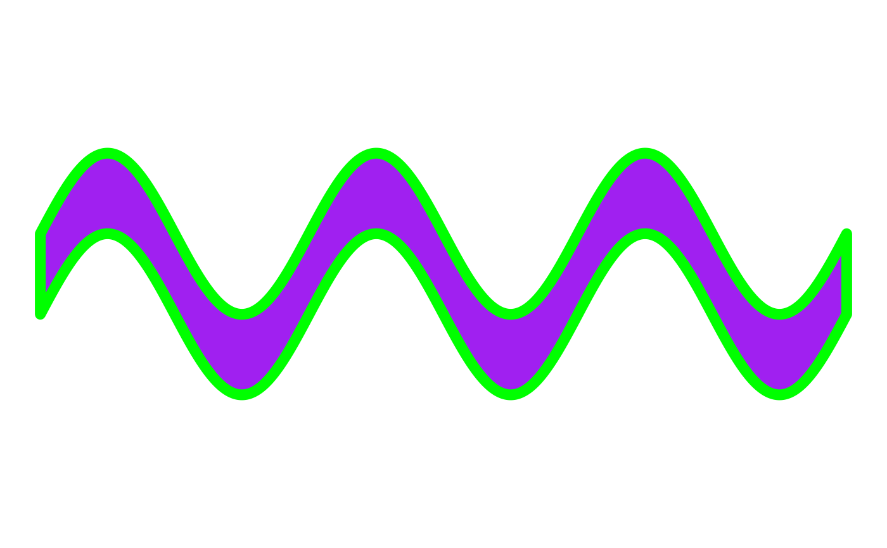

A tool for making data frames filled with data that displays sine or cosine waves when graphed.
The geom_path and geom_polygon geoms are recommended with this data for use in ggplot2 for generative art.
Usage
wave_data(
start,
end,
size = 1,
type = "sin",
orientation = "horizontal",
freq = 3,
n_points = 500,
color = NULL,
fill = NULL,
group_var = FALSE,
dampen = NULL,
amplify = NULL
)Arguments
- start
Numeric value. The starting point of the wave on the coordinate system. By default refers to the x-axis. Will refer to the y-axis if
orientationis set tovertical. Must be of length 1.- end
Numeric value. The ending point of the wave on the coordinate system. By default refers to the x-axis. Will refer to the y-axis if
orientationis set toverticalMust be of length 1.- size
Numeric value. The height or width of the wave. Orientation is set to
horizontalby default, thus size will affect height by default. When orientation is set tovertical, size controls the width of the wave. Must be a positive numeric value. Must be of length 1.- type
String value. "sin" or "cos" for sine or cosine waves.
sinis default. Must be of length 1.- orientation
String value. Default is
horizontalwhich will draw the wave from left to right (x-axis) on the coordinate system.verticalwill draw the wave from bottom to top (y-axis) on the coordinate system. Must be of length 1.- freq
Numeric value. Default is 3 cycles per second. This affects how many "peaks" are created in the wave. Must be a positive numeric value. Must be of length 1.
- n_points
Numeric value. Default is 500. This determines how many points each half of the wave will have. This option can come in handy when using jitter options or other texture/illusion methods. Must be of length 1.
- color
Optional String Value. A 6 digit hexadecimal webcolor code, or
Rcolors()color string for the border color of the wave. Must be of length 1.- fill
Optional String Value. A 6 digit hexadecimal webcolor code, or
Rcolors()color string for the fill color of the wave. Must be of length 1.- group_var
Logic value.
TRUEorFALSE. Default isFALSE. IfTRUE, Adds a group variable to the data frame. Useful for iterative work to make multiple waves in a single data frame.- dampen
Optional. A factor in which to dampen the wave (make "flatter"). Must be of length 1.
- amplify
Optional. A factor in which to amplify the wave (make "sharper"). Must be of length 1.
Examples
library(ggplot2)
wave_df <- wave_data(
start = 0, end = 10,
fill = "purple",
color = "green"
)
wave_df |>
ggplot(aes(x, y)) +
theme_void() +
geom_polygon(
fill = wave_df$fill,
color = wave_df$color,
linewidth = 3
) +
coord_equal()
